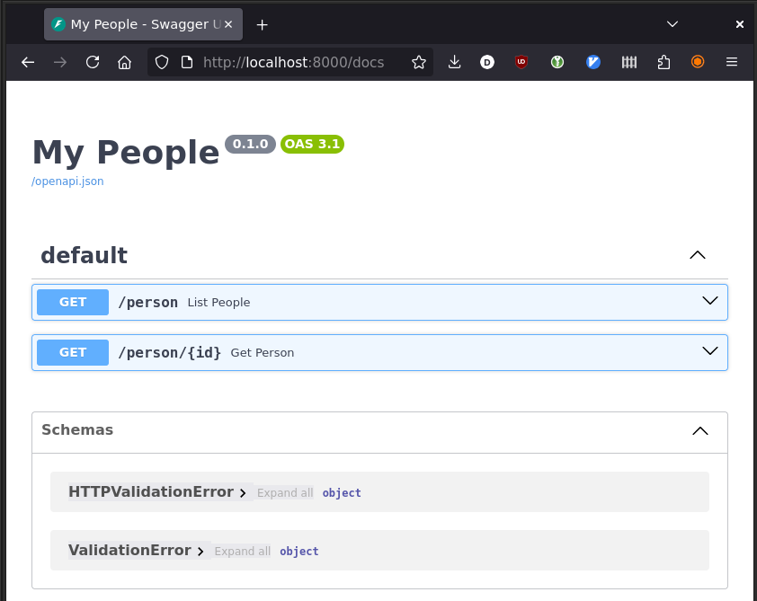
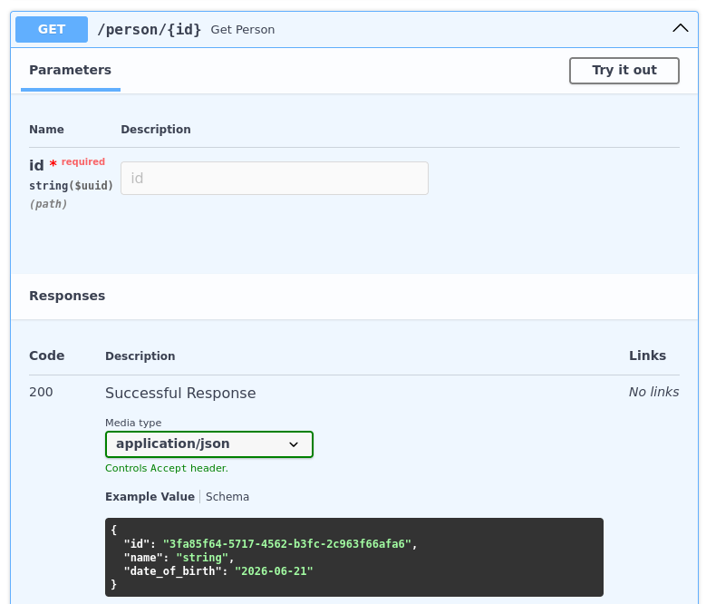

FastAPI is currently the established framework to write a REST API in Python. Its clever use of dependency injections and static typing makes developing web services a breeze, using a minimal amount of code and a clean and consistent architecture.
It's not difficult to see why. A minimal working server, serving a list and the details of a set of people, is the following:
from fastapi import FastAPI app = FastAPI(title="My People") @app.get("/person") def list_people(): return [] @app.get("/person/{id}") def get_person(id): return {"id": id}
Just pip install 'fastapi[standard]', save the above script in a server.py file, and run it with fastapi dev server.py: this will bring up a development server serving your API on port 8000:
$ curl -s http://localhost:8000/person [] $ curl -s http://localhost:8000/person/123 {"id":"123"}
Furthermore you can point your browser to http://localhost:8000/docs and you will be served a Swagger web interface allowing you to interact with the API:

That's already quite some infrastructure in place! However it doesn't specify anything about our model. What does a Person look like? This is where Pydantic comes into play.
Enter Pydantic
Pydantic lets you define an object's attributes, validate them, and describe them, just using Python type annotations.
Let's say that our person will have a name (mandatory) and a date of birth (which we allow to be nullable because we might not know it). We will also want an id on the record - let's say it will be a UUID. This definition can be represented with:
import datetime as dt from uuid import UUID, uuid4 from pydantic import BaseModel, Field class Person(BaseModel): id: UUID = Field(default_factory=uuid4) name: str date_of_birth: dt.date | None = None
This representation is enough to create an object with advanced validation, arguments conversion and output. In a Python shell we can play with it:
>>> p = Person(name="John Doe", date_of_birth="1970-01-01") >>> p # object with attributes converted to the right types Person(id=UUID('94d69603-c3f7-4dd4-9d64-eb1a24fc6fed'), name='John Doe', date_of_birth=datetime.date(1970, 1, 1)) >>> p.model_dump() # convert the object to a Python dictionary {'id': UUID('94d69603-c3f7-4dd4-9d64-eb1a24fc6fed'), 'name': 'John Doe', 'date_of_birth': datetime.date(1970, 1, 1)} >>> p.model_dump_json() # convert the object to a JSON string '{"id":"94d69603-c3f7-4dd4-9d64-eb1a24fc6fed","name":"John Doe","date_of_birth":"1970-01-01"}'
Now that we have this model we can annotate the views to signify that they will return a Person object and a list of such objects:
@app.get("/person") def list_people() -> list[Person]: return [] @app.get("/person/{id}") def get_person(id: UUID) -> Person: return Person(id=id, name="John Doe")
This is enough to give a pretty representation, from formal definition to result samples, in the Swagger interface:

Of course the objects that we are returning are fake and incomplete. The database knows the truth and it won't come as a surprise that we will want to use Psycopg to retrieve it...
Connecting views and the database
Let's create a table for this example and seed it with a couple of test records:
CREATE TABLE person ( id uuid PRIMARY KEY DEFAULT gen_random_uuid(), name text NOT NULL, date_of_birth date); INSERT INTO person (name, date_of_birth) VALUES ('Alice', '1970-01-01'); INSERT INTO person (name, date_of_birth) VALUES ('Bob', NULL);
I'll assume that the table is created in the "default database", the one you connect to by typing psql with no other argument. If you need to use a different database you can specify PG* env vars to select a different database to connect to, or hardcode a connection string in the following examples. Configuring FastAPI is outside the scope of this article (but psst... check Pydantic Settings).
Creating a working database connection, configuring it correctly, managing its life cycle, are matters separate from the code of the view functions, which just require a database connection. FastAPI offers an elegant method to separate these two independent concerns: the dependency injection.
The first part is creating a dependency: this is simply a function that creates, and optionally disposes of, an object. The one managing our connection could be simply:
import psycopg def get_connection(): # Use the PG* env vars to configure the database connection with psycopg.connect("") as conn: yield conn
Using yield in the context manager will make sure that the connection is correctly closed when the view function terminates.
Once we have this normal Python function we can define a type alias to enrich a type (the Psycopg connection) with the metadata defining how to obtain one (there are other ways, but defining an alias minimises repetitions):
from typing import Annotated Conn = Annotated[psycopg.Connection, Depends(get_connection)]
This completes the creation of the dependency. In order to use it, i.e. to define that the get_person() function requires a database connection to work, it is sufficient to add an argument of type Conn to the function definition. In order to reuse code between the two views, we can write a helper function, fetch_people(), taking an optional id argument if we want only one, which would run the proper query:
from fastapi import HTTPException @app.get("/person") def list_people(conn: Conn) -> list[Person]: return fetch_people(conn) @app.get("/person/{id}") def get_person(id: UUID, conn: Conn) -> Person: if people := fetch_people(conn, id=id): return people[0] else: raise HTTPException(status_code=404) def fetch_people(conn: psycopg.Connection, id: UUID | None = None) -> list[Person]: # We will implement this later ...
The views are pretty much just acting as a bridge between the environment (the FastAPI runtime and how it's configured) and the "business logic" (our database queries in this case, but there could be much more there). Note that the views use the Conn alias, so that FastAPI will inject the connection, whereas fetch_people() just asks for a plain psycopg.Connection: it doesn't know or care where the connection comes from. This separation also makes the code testable: you could write unit tests exercising fetch_people() in isolation from FastAPI, for example using PyTest fixtures to create a database connection (your test database is likely reached differently from a running server's) and test your business code independently from whether it is used in FastAPI or in a different environment.
Let's get down to the proper database querying: the way such code might have been written in psycopg2 could be something like:
def fetch_people(conn: psycopg.Connection, id: UUID | None = None) -> list[Person]: query = "SELECT id, name, date_of_birth FROM person" if id: query += " WHERE id = %(id)s" people = [] with conn.cursor() as cur: cur.execute(query, {"id": id}) for rec_id, name, date_of_birth in cur: people.append(Person(id=rec_id, name=name, date_of_birth=date_of_birth)) return people
This is a pretty verbose way to transform database records to instances of the Person class and classes like DictCursor and similar only help marginally. Psycopg 3 improved records conversion with the introduction of the row factories, which allow creating a direct bridge from the query result to the final objects.
from psycopg.rows import class_row def fetch_people(conn: psycopg.Connection, id: UUID | None = None) -> list[Person]: query = "SELECT id, name, date_of_birth FROM person" if id: query += " WHERE id = %(id)s" with conn.cursor(row_factory=class_row(Person)) as cur: cur.execute(query, {"id": id}) return cur.fetchall()
Note that Psycopg 3 makes ample use of type annotations and generic types: if you use a static checker such as Mypy, it will be able to infer that cur.fetchall() returns a list of Person and not a list of tuples, allowing you to detect a whole class of errors before even running a test.
If you are using Python 3.14, the use of template strings makes writing dynamic queries even simpler:
def fetch_people(conn: psycopg.Connection, id: UUID | None = None) -> list[Person]: query = t"SELECT id, name, date_of_birth FROM person" if id: query += t" WHERE id = {id}" with conn.cursor(row_factory=class_row(Person)) as cur: cur.execute(query) return cur.fetchall()
Either implementation completes the code: the API can be tested using the Swagger interface or curl on the command line:
$ curl -s http://localhost:8000/person | jq [ { "id": "a0aaa2d4-9fa4-4baf-83ed-a3fe35f051d3", "name": "Alice", "date_of_birth": "1970-01-01" }, { "id": "706c17ea-2214-4482-810f-e6ed1cfab694", "name": "Bob", "date_of_birth": null } ] $ curl -s http://localhost:8000/person/a0aaa2d4-9fa4-4baf-83ed-a3fe35f051d3 | jq { "id": "a0aaa2d4-9fa4-4baf-83ed-a3fe35f051d3", "name": "Alice", "date_of_birth": "1970-01-01" } # The status code here is 404, not 200 $ curl -s http://localhost:8000/person/00000000-0000-0000-0000-000000000000 | jq { "detail": "Not Found" }
Pools and applications
Creating a new connection at every request is a big performance hit: connection creation is a relatively slow operation. For this reason Psycopg makes a connection pool available, with a set of connections ready to be used. Remember that the Psycopg pool is distributed as a separate package, therefore you might want to have something like psycopg[binary,pool] in your dependencies.
In your program you will want to create a single instance of the pool and have the views using it. Creating a pool as a global variable works, but a much more refined way to manage the lifetime of the pool is to tie it to the life cycle of the application: FastAPI will create the pool at application start and dispose of it cleanly on program exit. This avoids problems such as partially initialized code or side effects at import time.
What happens at startup and shutdown is controlled by a lifespan function passed as argument to the FastAPI object. This too uses the single yield trick to allow suspending the execution and restoring it (to run the cleanup part) when the end of the application lifetime is reached. We make use of this function to create a pool adequately configured:
from psycopg_pool import ConnectionPool def lifespan(app: FastAPI): with ConnectionPool("") as pool: app.state.pool = pool yield # Add the 'lifespan' argument to the existing app app = FastAPI(title="My People", lifespan=lifespan)
The pool creates and maintains a configured number of connections and makes them available to the application code as soon as one is requested. We only need to change the body of the dependency injection to obtain a connection from the pool instead of creating a new one, no change to the views. The FastAPI Request object (which in turn is another dependency injection) lets us get the object representing the running application so that we can obtain the pool instance from it:
from fastapi import Request def get_connection(request: Request): with request.app.state.pool.connection() as conn: yield conn
Conclusions
We have taken a quick look at some FastAPI features (views and models definition, dependency injections, application lifetime), some Psycopg features (PG* env vars, row factories, connection pool), and how they can interact together, with the help of Pydantic as an expressive objects model.
The complete and runnable code of the example can be downloaded here.
Happy hacking!